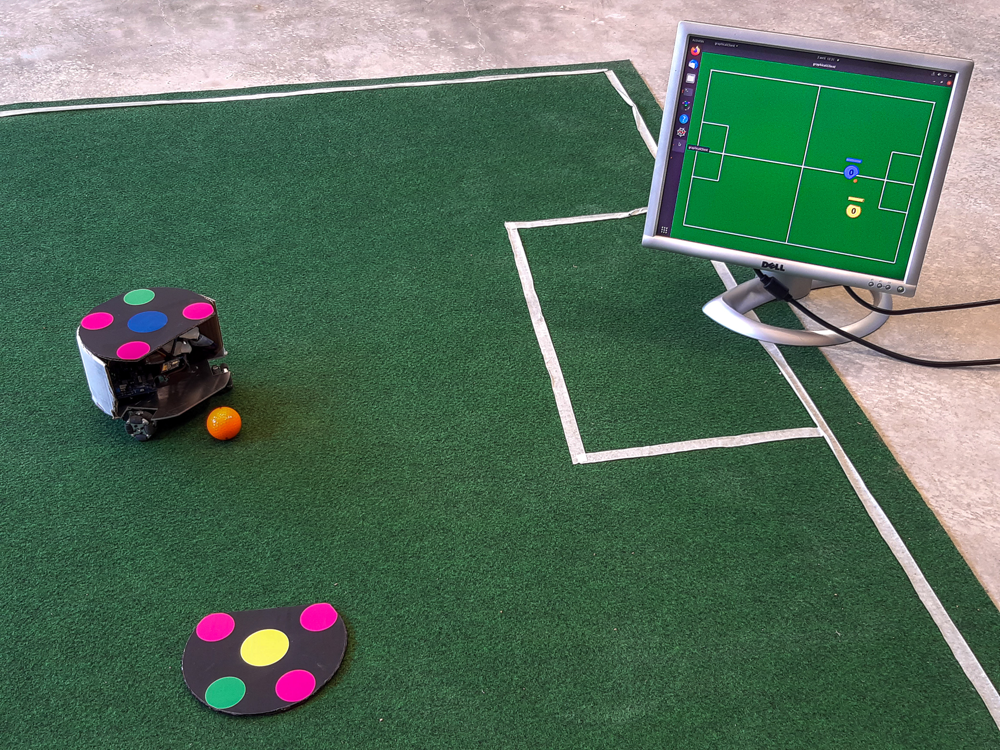
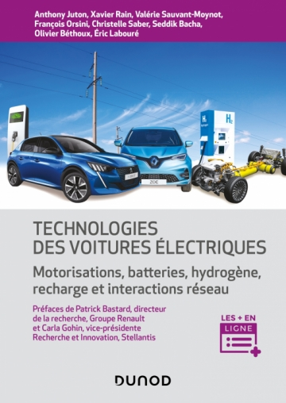

Actualités
Journées de la revue 3EI et du DER Nikola TESLA
23 et 24 juin 2022 à l'ENS Paris-Saclay
Programme de la journée du 23 juin 2022 :
- Matinée en grand amphitéatre : Sciences de la pédagogie, MOOC et plateforme STEEVE, outils numérique
- Après midi tables rondes : outils numériques et retour d'expérience, évaluation des enseignements, IA et enseignements
- Visite des salles de concours de l'ENS Paris-Saclay
Programme de la journée du 24 juin 2022 :
- Matinée en grand amphitéatre : Problématiques de l'EEA aujourd'hui (Santé, Bio, IA, Développement Durable, ...)
- Après midi tables rondes : Attractivé de l'EEA, évolutions des formations du département, formation continue et universités, place des agrégés dans le système universitaire
Nouvelle saison de la robocup en première année SAPHIRE

Les étudiants en premère année planchent sur la réalisation de robots et sur leur commande en vue d'un match de robot-football
Publication d'un ouvrage : Technologies de voitures électriques : Motorisations, batteries, hydrogène, recharge et intéractions réseau, Dunod

Ouvrage collectif sur les technologies des voitures électriques avec un enseignant du DER Nikola TESLA,
un ancien étudiant du DER, des chercheurs des laboratoires SATIE et GeePS, et des industriels.